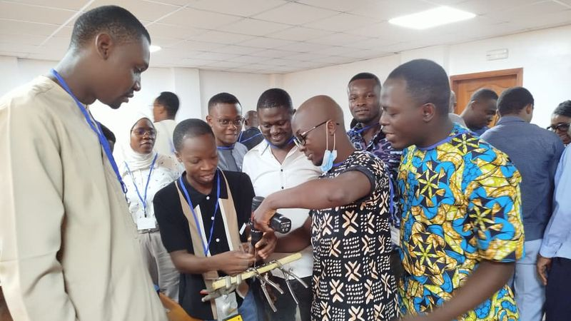
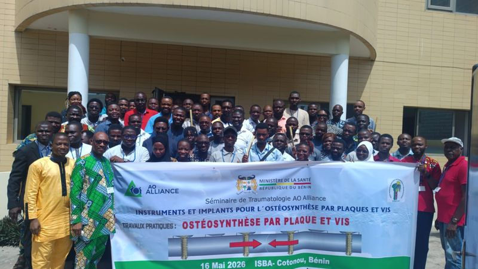
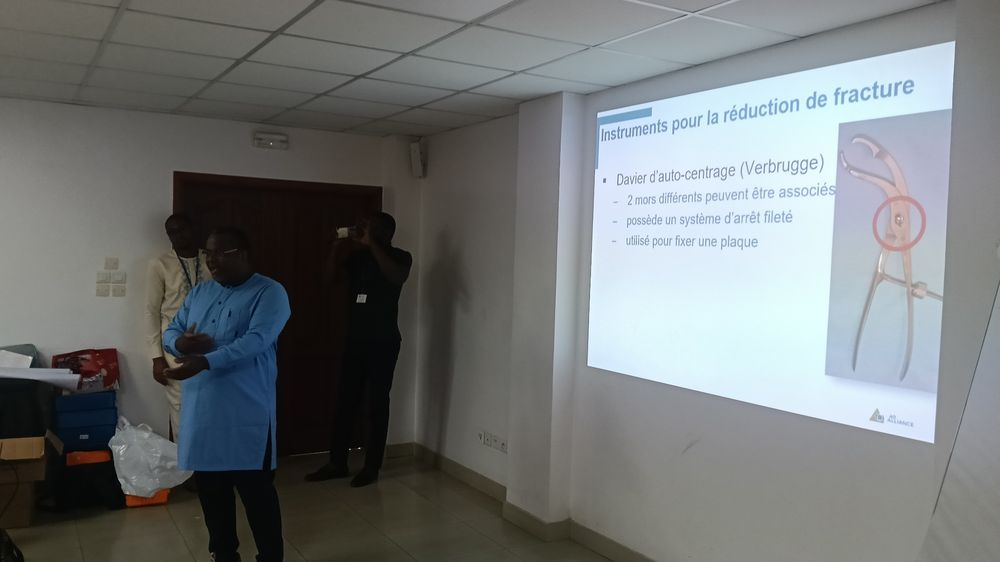
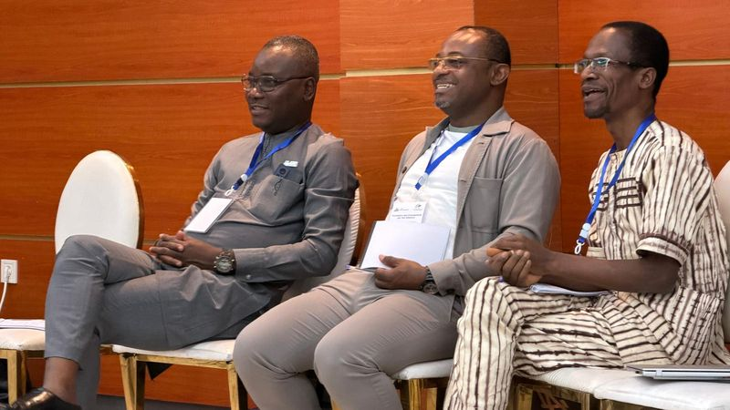

Atelier pratique · [événement, lieu, date][Intitulé de la prochaine session AO Alliance]
[Ville] · [JJ–JJ mois AAAA] · [X] jours · [XX] places
Quatre entrées, rien de plus.
Le site est volontairement court : un calendrier, un répertoire de contacts et deux médiathèques. Chaque rubrique est tenue à jour par le secrétariat de l’association.
Prochaines sessions au Cameroun
Les sessions organisées au Cameroun. Les événements des autres zones du réseau AO Alliance sont accessibles depuis le menu Calendrier.
La mémoire de nos sessions

Photothèque
Les albums photo de chaque événement : séances de cours, travaux pratiques, photos de groupe et remise des attestations.

Vidéothèque
Les démonstrations techniques filmées et les comptes rendus vidéo des séminaires, classés par thème et par année.

Liste des contacts
Le bureau exécutif, le secrétariat et les correspondants régionaux, avec leur périmètre et le moyen de les joindre.
Une question sur un événement ?
Le secrétariat répond aux questions d’inscription, de lieu et de prérequis. Les demandes d’organisation d’une session passent par le même canal.